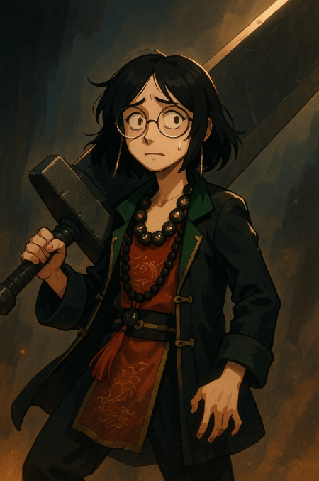

🌑 Arco 1 – Traição
Introdução:
Os personagens são alunos recém-chegados à Academia Aethel, onde acabam se conhecendo ao seguir um misterioso tentáculo negro nos corredores da escola.
Eventos principais:
- O tentáculo os leva até a sala do reitor, onde testemunham Izack matando o Reitor de Aethel.
- Izack desaparece, e os alunos são pegos ao lado do corpo. Toda a academia os vê como culpados.
- Eles fogem e tornam-se procurados pelo reino.
- Refugiam-se na cidade de Fausto, mas descobrem que é uma ilusão construída por Izack — um estômago mágico que consome pessoas através do medo, corpo e alma.
- Escapam de Fausto, mas são interceptados pelo General Francesco Lionheart, tio de Toriel, que tenta prendê-los.
- A Legião Abissal aparece (Homem Pálido, Cirurgião, Homem do Elmo), provocando uma batalha caótica.
- Elise, uma integrante da Legião, salva os jogadores e os leva até um laboratório subterrâneo.
🩸 Arco 2 – Quimeras, Experimentos e Verdades Escondidas
Protocolo da Dor & Evangelho da Última Quimera:
- No esconderijo, os jogadores veem experimentos grotescos: transformações humanas em quimeras.
- São derrotados e acordam pendurados em uma sala viva, cercada de carne pulsante e embriões.
- Descobrem que Kaguya foi alvo de experimentos para fundi-la com a espada Chiketsu Kotsuken.
- Kaguya invade o laboratório e sela um pacto sangrento com a espada.
Luta feroz contra a Legião:
- Kaguya mata o Homem do Elmo com seus espinhos.
- Zarkov derrota os Irmãos Amaldiçoados.
- Mahrez corta as mãos do Cirurgião, que foge.
Elise se rebela contra Izack, mas já é tarde: o apóstolo Jazida, um abissal puro, desperta e a mata absorvendo sua alma.
Os heróis escapam por uma distorção e acordam em uma versão passada da própria Aethel.
Percebem que estão nos corpos de seus ancestrais.
❄️ Arco 3 – Jogos de Inverno
Sessão 1 – Boas-Vindas aos Condenados
➤ Parte 1: A Jornada à Arábia
O grupo, após reunir os heróis restantes Arabella e Eleonor, é enviado com urgência para a Arábia, terra natal de Mahrez, agora tomada por guardas corrompidos.
Descobrem que os soldados de elite são quimeras de lodo, camufladas com armaduras cerimoniais.
Após derrotá-los, descobrem uma arena ritualística no centro da cidade — que, assim como Fausto, é na verdade um estômago abissal disfarçado.
➤ Parte 2: O Ritual da Arena
Por tradição local, qualquer estrangeiro que pisa na arena deve lutar em combate ritualístico.
Cada jogador enfrenta uma criatura ou campeão:
- Arabella e Eleonor vencem facilmente.
- Zarkov sofre, mas triunfa.
- Kaguya vence por pouco.
- Toriel, surpreendentemente, derrota um dragão gigante.
- Elisya aparentemente morre… mas se levanta misteriosamente.
- Mahrez enfrenta uma criatura poderosa, mas no final vê Izack observando do alto da arena.
➤ Parte 3: A Última Quimera
Izack ativa o verdadeiro propósito da arena: invocar a Última Quimera, um cardeal demoníaco com chifres, tridente e múltiplas vozes suplicando por perdão.
Uma luta brutal se segue. A criatura é derrotada.
Ao final, uma tumba de areia emerge do chão, com uma urna ritualística que suga Mahrez para dentro.
➤ Parte 4: Nakhir e o Destino de Mahrez
“Agora teu sopro pertence à eternidade.”
Mahrez retorna com seus pulmões substituídos por areia viva — punição permanente por sua sanidade corrompida.
Sessão 2 – Boas-Vindas aos Condenados (continuação)
Mahrez e o grupo seguem para encontrar o pai dele, mas o encontram possuído pela entidade "O Príncipe".
O Príncipe os desafia para um jogo macabro de Verdade ou Desafio, com testes que drenam sanidade.
Após vencerem o jogo, Nakhir força Mahrez a comer o coração do pai como rito final.
Uma luta violenta acontece — Mahrez confronta o próprio pai possuído.
Ao fim, vencem a entidade.
➤ Retorno a Aethel
O grupo encontra um convite misterioso para retornar a Aethel.
Usam uniformes falsos da academia Bayat al Nar para entrar disfarçados como alunos de intercâmbio.
Toriel gasta toda sua mana para abrir um portal até Belém, onde Aethel está localizada.
Hospedam-se em uma taverna.
No dia seguinte, correm até Aethel para a cerimônia de boas-vindas.
Encontram Izack como o novo Reitor, ao lado da Trupe dos Sete Espinhos.
Izack, sorrindo diante da multidão, ergue um papel e diz: “Boas-vindas... a todos.” (Fim da sessão)
Sessão 3 – Luta de Egos
- Discurso oficial de Izack.
- Sarthan, líder da Trupe, faz o discurso explicando os Jogos de Inverno.
- Tensão entre Toriel e Sarthan — revelado que ele é noivo da irmã de Toriel.
- Arabella discute com Sarthan e entra em atrito com Kaguya.
- Ao final, recebem um panfleto explicando a Semana da Sabedoria — terão 1 mês para se preparar.
- Kaguya, dominada pela espada, ataca os aliados, sugando sangue.
- Elisya é tomada pelo Grimório. Zarkov entra em fúria.
- Mahrez é possuído por Nakhir — luta brutal contra Arabella e Kaguya, que o derrota perfurando seu olho esquerdo (trauma permanente).
- O grupo volta para a taverna. Tensão entre Mahrez e Arabella.
➤ Parte 4: Nakhir e o Destino de Mahrez
“Agora teu sopro pertence à eternidade.”
Mahrez retorna com seus pulmões substituídos por areia viva — punição permanente por sua sanidade corrompida.
No dia seguinte, recebem panfletos com atividades da Semana da Sabedoria, conhecem os quartos e colegas.
Arabella e Kaguya veem uma goblin criança saindo da biblioteca trancada, dizendo:
“A carne da biblioteca ainda respira... Os livros sussurram nomes. Mas não os leia em voz alta... senão eles descem da prateleira... e não voltam sozinhos.”
(Fim da sessão)
Toriel Lionheart — Lore Completa
Origem e Família
Toriel Lionheart nasceu em 6 de janeiro de 1483, terceiro na linha de sucessão ao trono do Brasil, governado pela poderosa dinastia Lionheart. Filho do rei Lucius V Lionheart e irmão do príncipe herdeiro Melchior e da princesa Cassandra, sempre foi o “patinho feio” da realeza.
Personalidade e Aparência
Magro, com olhos intensos e cabelos negros, Toriel tem uma postura séria, mas carrega uma chama interior de rebeldia. Sua expressão frequentemente mostra cansaço, fruto das pressões do palácio e da traição que sofreu.
Acusações e Fuga
Acusado injustamente de participar do assassinato do Reitor da Academia Aethel junto com Mahrez, Elisya e Kaguya, Toriel foi forçado a fugir, deixando para trás sua família e seu título real.
Habilidades e Alianças
Durante a fuga, Toriel desenvolveu habilidades mágicas únicas, com especial foco em manipulação de mana e combate corpo a corpo. Ele formou laços com outros fugitivos, incluindo os protagonistas do RPG, unindo forças para derrubar Izack e revelar a verdade por trás da traição.
Motivações e Conflitos
Além de limpar seu nome, Toriel luta contra seu próprio sentimento de abandono pela família e pela coroa. Sua ambição é recuperar a honra dos Lionheart e proteger aqueles que ama, mesmo que para isso precise andar na linha tênue entre a justiça e a vingança.